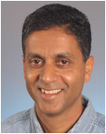

Distinguished Lecture Series
Towards Sentient Chips: Self-Awareness through On-Chip Sensemaking
Nikil Dutt, University of California, Irvine
Monday February 23, 2015 | 12:45-1:45 | SB 113
While the notion of self-awareness has a long history in biology, psychology, medicine, engineering and (more recently) computing, we are seeing the emerging need for self-awareness in the context of complex many-core chips that must address the (often conflicting) challenges of resiliency, energy, heat, cost, performance, security, etc. in the face of highly dynamic operational behaviors and environmental conditions. In this talk I will present the concept of CyberPhysical-Systems-on-Chip (CPSoC), a new class of sensor-actuator rich many-core computing platforms that intrinsically couples on-chip and cross-layer sensing and actuation to enable self-awareness. Unlike traditional MultiProcessor Systems-on-Chip (MPSoCs), CPSoC is distinguished by an intelligent co-design of the control, communication, and computing (C3) system that interacts with the physical environment in real-time in order to modify the system's behavior so as to adaptively achieve desired objectives and Quality-of-Service (QoS). The CPSoC design paradigm enables self-awareness (i.e., the ability of the system to observe its own internal and external behaviors such that it is capable of making judicious decision) and (opportunistic) adaptation using the concept of cross-layer physical and virtual sensing and actuations applied across different layers of the hardware/software system stack. The closed loop control used for adaptation to dynamic variation -commonly known as the observe-decide-act (ODA) loop -- is implemented using an adaptive, reflexive middleware layer. The learning abilities of CPSoC provide a unified interface API for sensor and actuator fusion along with the ability to improve autonomy in system management. The CPSoC paradigm is the first step towards a holistic software/hardware effort to make complex chips "sentient".
Nikil Dutt is a Chancellor's Professor of CS, Cognitive Sciences, and EECS at the University of California, Irvine. He received a PhD from the University of Illinois at Urbana-Champaign (1989). His research interests are in embedded systems, electronic design automation, computer architecture, optimizing compilers, distributed systems, and brain-inspired architectures and computing. He has received numerous best paper awards and is coauthor of 7 books. Professor Dutt served as EiC of ACM TODAES (2003-2008) and as AE for ACM TECS and IEEE TVLSI. He has served on the steering, organizing, and program committees of several premier CAD and Embedded System Design conferences and workshops, and serves or has served on the advisory boards of ACM SIGBED, ACM SIGDA, ACM TECS and IEEE ESL. Professor Dutt is a Fellow of the ACM and IEEE, and recipient of the IFIP Silver Core Award.
A Versatile Storage System for Future Networking Architecture
Xiaohua Jia, City University of Hong Kong
Friday March 13, 2015 | 12:45-1:45 | SB 111
As the growth of social networks in recent years, user generated data, such as videos, photos and blogs, has become an important source of information in our life. However, user’s data are often locked in by a few giant application service providers (ASP), such as Facebook, Twitter, Tencent, etc. There are two drawbacks with this structure: 1) The ownership of user’s data belongs to ASPs. The sharing of the user’s data cannot go across different ASPs to reach broader audience. 2) User’s online social groups are fragmented by ASPs. That is, the members of a user’s social group, such as “friends” or “colleagues”, are scattered among different ASPs. In this talk, we present a global storage system as the infrastructure of the Internet. In this platform, users have their own storage to store their data and social relations, and thus the ownership of users’ data and users’ social relations are returned back to the users. The system is an open structure that it provides standard API to interact with ASPs. Users are able to publish or share their data with targeted social groups regardless which ASPs they are with. This global storage system can also support real-time data communication. It integrates networking service with traditional file service.
Xiaohua Jia received his BSc (1984) and MEng (1987) from University of Science and Technology of China, and DSc (1991) in Information Science from University of Tokyo. He is currently Chair Professor with Dept of Computer Science at City University of Hong Kong. His research interests include cloud computing and distributed systems, computer networks, wireless sensor networks and mobile wireless networks. Prof. Jia is an editor of IEEE Internet of Things, IEEE Trans. on Parallel and Distributed Systems (2006-2009), Wireless Networks, Journal of World Wide Web, Journal of Combinatorial Optimization, etc. He is the General Chair of ACM MobiHoc 2008, Area-Chair of IEEE INFOCOM 2010 and 2015, TPC Co-Chair of IEEE GlobeCom 2010 – Ad Hoc and Sensor Networking Symp, and TPC Vice-Chair of ICDCS 2015. He is Fellow of IEEE.
Holographic Algorithms and Classification of Counting Problems
Jinyi Cai, University of Wisconsin, Madison
Monday March 23, 2015 | 12:45-1:45 | SB 111
The P versus NP problem is one of the most challenging intellectual problems of our time. A fundamental goal of complexity theory is to provide classifications according to the inherent difficulty of computational problems. I will describe some recent advances in the study of Counting Problems. This includes Valiant's holographic algorithms, and a number of complexity dichotomy theorems. In a holographic algorithm, information is represented in a superposition of linear vectors. This mixture creates the possibility for exponential sized cancellations of fragments of local computations. The underlying computation is done by invoking the Fisher-Kasteleyn-Temperley method for counting perfect matchings for planar graphs, which uses Pfaffians and runs in polynomial time. In this way some seemingly exponential time computations can be done in polynomial time. I will also describe a number of dichotomy theorems, for Graph Homomorphisms (spin systems), Constraint Satisfaction Problems (CSP), and Holant Problems. These dichotomies classify every problem in a class to be either computable in polynomial time, or to be intractable. No background knowledge is required.
Jin-Yi Cai studied at Fudan University (class of 77). He received his Ph.D. in 1986 from Cornell University. He is currently the Steenbock Professor at the University of Wisconsin--Madison. His research interest is computational complexity theory. His awards include a PYI, a Sloan and a Guggenheim Fellowship, and a Humboldt Research Award. He is a Fellow of ACM (2001).
Translating Videos to Natural Language Using Deep Recurrent Neural Networks
Raymond Mooney, University of Texas, Austin
Thursday April 16, 2015 | 12:45-1:45 | SB 111
Abstract TBD
Raymond J. Mooney is a professor in the Department of Computer Science at the University of Texas at Austin. He received his Ph.D. in 1988 from the University of Illinois at Urbana/Champaign. He is an author of over 150 published research papers, primarily in the areas of machine learning and natural language processing. He was the president of the International Machine Learning Society from 2008-2011, program cochair for AAAI 2006, and is a AAAI and ACM Fellow. His recent research has focused on learning for natural-language processing, statistical relational learning, active transfer learning, and connecting language, perception and action.